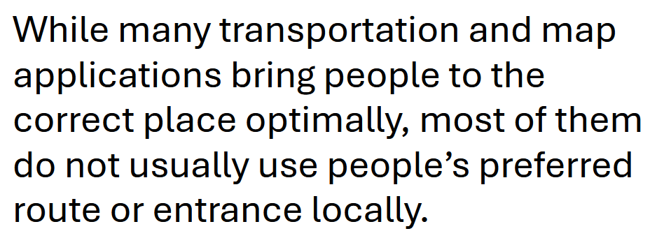
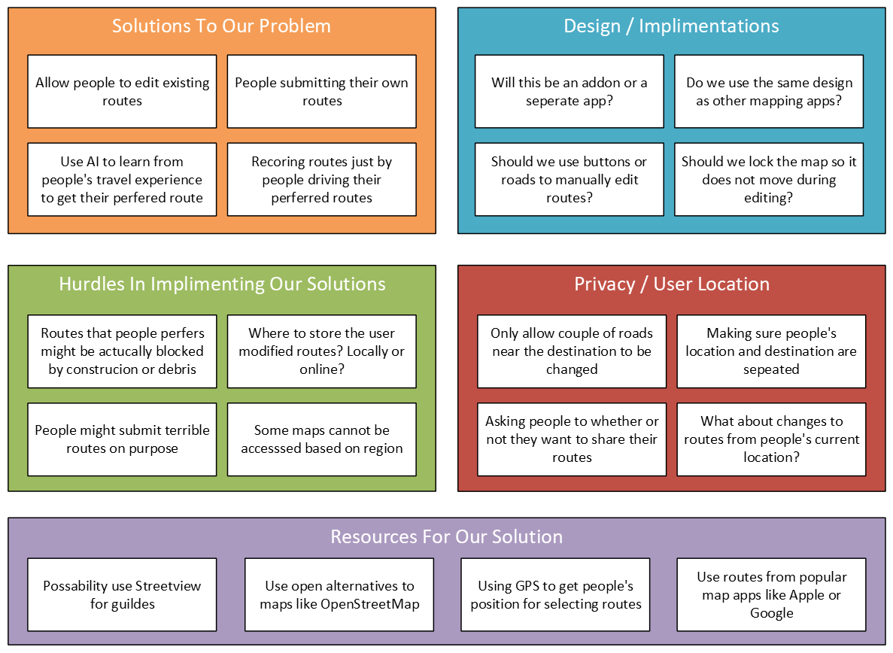
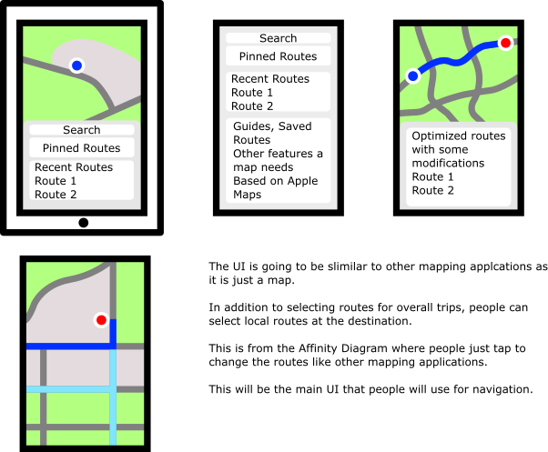

While many transportation and map applications bring people to the correct place optimally, most of them do not usually use people's preferred route or entrance locally.

Solutions, resources and issues like privacy that can be used to solve the problem of suggesting preferred routes.

Digital sketches of how the application will be used by regular people who just want to go from one place to another, an employee managing the application on a desktop, and a person who might plan out most of their trips.